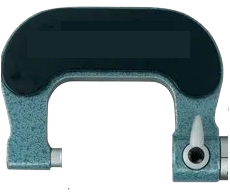
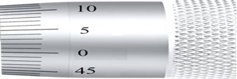
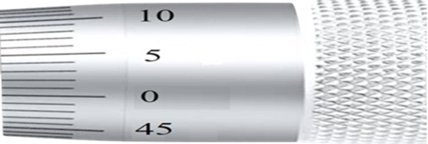
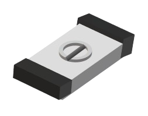
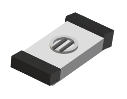
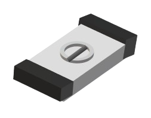
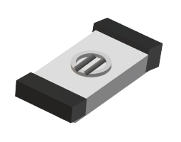
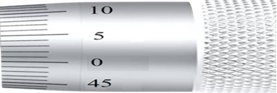
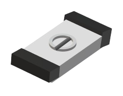
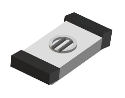

Measurement of the effective diameter E
Choose the wire diameter d ( mm ):
Choose the pitch of thread p ( mm ):
The distance between the outer surfaces of the two wires M ( mm ):
The effective diameter ( E (mm)):
Choose the wire diameter d ( mm ):
Choose the pitch of thread p ( mm ):
The distance between the outer surfaces of the two wires M ( mm ):
The effective diameter ( E (mm)):


 

 






Screw thread specimen
Two Wire
One Wire